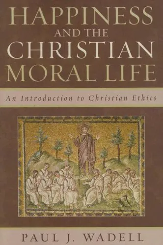
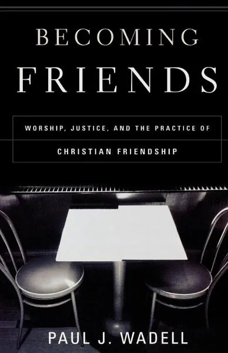
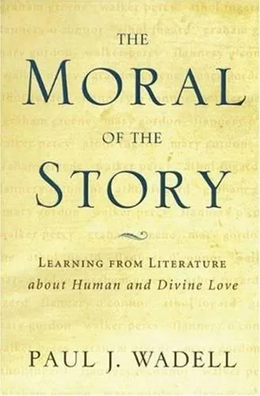
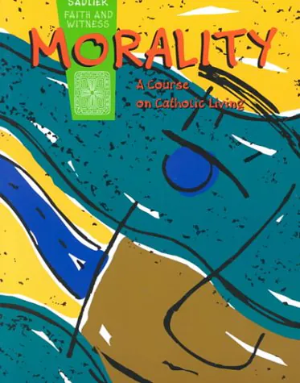
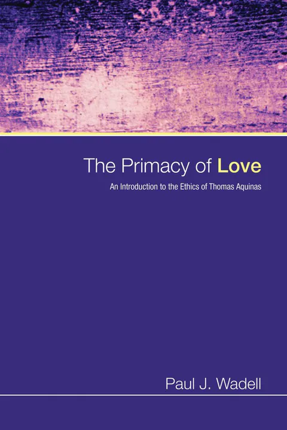
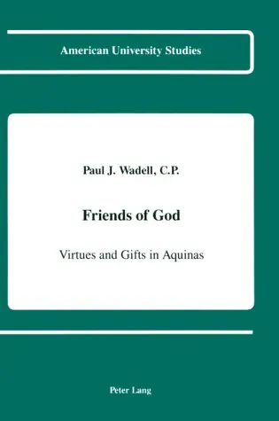
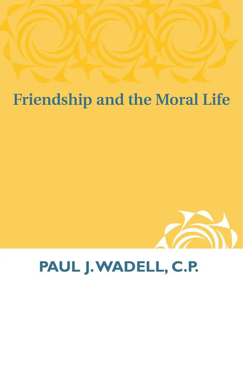

Theologian · Author · Teacher
Paul J.
Wadell
Writing on friendship, virtue,
and the Christian moral life.
About
A Life of Friendship & Faith
For more than three decades, Paul J. Wadell has written and taught from a single conviction: the moral life is less about rules than about becoming a certain kind of person—one formed by friendship, shaped by virtue, and drawn into the love of God.
A native of Louisville, Kentucky, he studied English at Bellarmine University before earning his Master of Divinity and Master of Arts in theology at Catholic Theological Union in Chicago and a doctorate in theology from the University of Notre Dame. He taught moral theology at Catholic Theological Union for many years, then joined the faculty of St. Norbert College in De Pere, Wisconsin, in 1998.
At St. Norbert, his theology classes were in constant demand, remembered by students long after graduation, and the source of many lifelong friendships. From 2000 to 2010, he coordinated faculty and staff development for the college's Faith, Learning, and Vocation program, and he has contributed to NetVUE's Scholarly Resources Project on vocation in higher education as well as co-directing with Darby Ray of Bates College the NetVUE seminar, "Teaching Vocational Exploration." He was named professor emeritus of theology and religious studies in 2019.
In 2024, St. Norbert College conferred on him the degree of Doctor of Letters, honoris causa, honoring the "scholarly depth and inspirational impact" of his work, and he delivered that year's commencement address. The same year, the authors of Called Beyond Our Selves: Vocation and the Common Good (Oxford University Press) dedicated the volume to him in gratitude for his influence on their work as teacher-scholars.
Education
- Ph.D., Theology University of Notre Dame
- M.Div. & M.A. Catholic Theological Union, Chicago
- B.A., English Bellarmine University, Louisville
Milestones
- 1984 Begins teaching ethics at Catholic Theological Union in Chicago.
- 1989 Publishes his first book, Friendship and the Moral Life.
- 1998 Joins the theology and religious studies faculty at St. Norbert College.
- 2000–2010 Coordinates faculty and staff development for the Faith, Learning, and Vocation program.
- 2017 Began co-directing with Darby Ray of Bates College the NetVUE seminar, "Teaching Vocational Exploration."
- 2019 Named professor emeritus; keynotes the college’s faculty development conference with “Creating a Culture of Friendship and Charity.”
- 2021 Publishes Living Vocationally with Charles R. Pinches.
- 2024 Receives an honorary Doctor of Letters and delivers the St. Norbert commencement address.
Books
Nine Books, Many Conversations
Three decades of writing on friendship, virtue, love, and the called life.
-

2024
Happiness and the Christian Moral Life
An Introduction to Christian Ethics
View on Amazon → -
2021
Living Vocationally
The Journey of the Called Life
View on Amazon → -
2010
The Christian Moral Life
Faithful Discipleship for a Global Society
View on Amazon → -

2002
Becoming Friends
Worship, Justice, and the Practice of Christian Friendship
View on Amazon → -

2002
The Moral of the Story
Learning from Literature about Human and Divine Love
View on Amazon → -

1996
Morality
A Course on Catholic Living
View on Amazon → -

1992
The Primacy of Love
An Introduction to the Ethics of Thomas Aquinas
View on Amazon → -

1991
Friends of God
Virtues and Gifts in Aquinas
View on Amazon → -

1989
Friendship and the Moral Life
View on Amazon →
Themes
Threads Through the Work
The convictions that connect nine books and a lifetime of teaching.
-
i.
Friendship
Friendship is not a private comfort but a school of virtue, the relationship through which we learn what to love and who to become.
-
ii.
Love at the Center
Following Thomas Aquinas, charity, understood as friendship with God, is the orientation that gives the Christian moral life its coherence.
-
iii.
Virtue & Character
Morality is the formation of a person over time, not merely compliance with rules or a series of isolated decisions.
-
iv.
Community & Worship
Moral growth happens together, through friendship, shared practices, justice, forgiveness, and the life of worship.
-
v.
Happiness
Ethics asks what kind of life leads to genuine human flourishing, and what kind of person we must become to live it.
-
vi.
Vocation
Every life is a called life, unfolding through the concrete relationships and responsibilities in which discipleship takes shape.
Speaking & Teaching
In Conversation
Lectures, retreats, seminars, and faculty development.
A teacher first, Paul Wadell has spent his career helping students, faculty, and communities think together about the good life. He speaks to colleges, universities, parishes, and professional gatherings, and he has long worked with faculty and staff on questions of mission, vocation, and the life of the mind.
Among the subjects he speaks on:
- Friendship and the moral life
- Virtue, character, and Christian formation
- Vocation and the called life
- Happiness and human flourishing
- The ethics of Thomas Aquinas
- Building a culture of friendship and charity on campus
Upcoming
June 7–11, 2027
Teaching Vocational Exploration
NetVUE Summer Seminar, Council of Independent Colleges. Co-led with Darby Kathleen Ray.
Seminar details →Contact
Write to Paul
For speaking invitations, interviews, academic correspondence, or a note about one of the books.